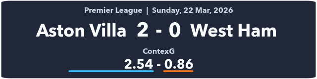
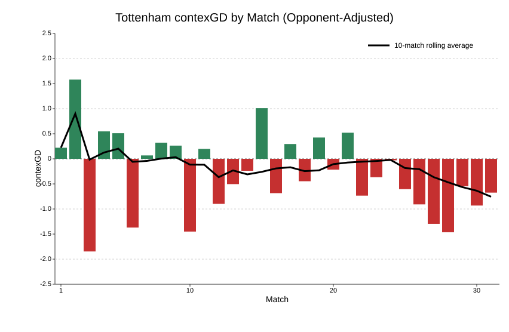

| Premier League 2025-26 contexG Ratings | ||
| 22 Mar, 2026 | ||
| Team | Matches | contexGD |
|---|---|---|
| Arsenal | 31 | 1.07 |
| Manchester City | 30 | 0.99 |
| Chelsea | 31 | 0.60 |
| Liverpool | 31 | 0.59 |
| Manchester United | 31 | 0.36 |
| Brentford | 31 | 0.16 |
| Newcastle United | 31 | 0.15 |
| Fulham | 31 | 0.05 |
| Brighton | 31 | 0.04 |
| Bournemouth | 31 | 0.03 |
| Aston Villa | 31 | 0.03 |
| Crystal Palace | 30 | 0.02 |
| Leeds | 31 | −0.08 |
| Everton | 31 | −0.28 |
| Tottenham | 31 | −0.35 |
| Nottingham Forest | 31 | −0.39 |
| Sunderland | 31 | −0.54 |
| West Ham | 31 | −0.63 |
| Wolves | 31 | −0.76 |
| Burnley | 31 | −1.03 |
Premier League Weekend Review: 20-22 March
football
Premier League
contexG
Spurs sink to new low, impressive derby win for Sunderland, and Chelsea lose 4th in-a-row.
Spurs sink to new low, impressive derby win for Sunderland, and Chelsea lose 4th in-a-row.
See my intro article for more information on contexG.
Bournemouth 2 - 2 Manchester United
A fifth consecutive draw for Bournemouth whose previous games finished 0-0, 1-1, 0-0 and 0-0. This may give the illusion of Bournemouth being a dull side. Au contraire! The total Fotmob xG in those four games has been 3.92, 3.13, 2.32 and 3.95, so it’s 2 goals from 13.32 xG.
This latest draw was another entertaining affair (xG 1.80-1.77) that did at least involve four goals despite ending level again. In a season where entertainment levels have been subject to debate, there is no doubt Bournemouth are one of the better teams to watch. They rank 4th for total contexG and 3rd for total goals in their matches this season.
United were pretty good in the first half: 17 penalty box touches to 7 and 11 shots to 5, with the second half more even. For the second time in four matches Matheus Cunha won a key penalty—you don’t get an assist for that, but I think you should! Another overall decent performance from United (contexG 1.26-1.58 in their favour) at a tricky away ground, and with favourable results elsewhere it looks like mission accomplished for this season as, barring a major collapse, Champions League football will be returning to Old Trafford.
Brighton 2 - 1 Liverpool
A deserved win for Brighton in one of their best performances of the season. It’s Liverpool, so I’m sure most of the focus will be on their shortcomings, but this continues a good run from Brighton over the last nine matches, eight of which have seen a positive contexGD (opponent-adjusted). This almost perfectly overlaps the period since they re-signed Pascal Gross from Borussia Dortmund.
Liverpool’s second half performance, given they were chasing the game from the 56th minute, was very disappointing. Only four shots for 0.21 xG, and Brighton led second-half penalty box touches 24 to 13.
It’s fair to mention that Liverpool were missing Isak and Salah up front, plus Ekitike when he went off after 8 minutes, and injuries in the same area of the pitch tend to compound. Nonetheless, given the huge sums invested in the squad, expectations at Anfield are that they should be capable of better than this with a handful of players out.
Liverpool got a kind draw in the Champions League round of 16 where they destroyed Galatasaray in the second leg, but next up they have PSG, plus Man City away in the FA Cup, and if they lose those ties the vultures will be circling around Arne Slot.
Fulham 3 - 1 Burnley
Job done from Fulham and it was a nice performance in a game they were expected to win. They led deep completions 16‒4 and shots 22-9, and contexG rated this as a very dominant performance (3.10-1.10).
Burnley’s Josh Laurent suffered the penalty + red card + suspension triple punishment for denying a goalscoring opportunity in injury time. There’s been a glut of these lately, including Manchester United’s Harry Maguire also this weekend, and I have said previously that I think this is way too harsh. The penalty alone is 0.8 xG! Throw in a yellow card too if you like, and that is ample punishment in all but the most egregious cases. I also think Raul Jimenez’s ridiculous stutter-step should be banned; his feet literally ran backwards twice during the run-up. It’s effective though—according to FBref stats, Jimenez has scored 40 of 42 penalties (95%) in his career for club and country.
Everton 3 - 0 Chelsea
A classic David Moyes performance with only 36% possession but a clean sheet and efficient finishing. Along with Aston Villa and Sunderland, Everton are now challenging for the “biggest overperformers” mantle as they find themselves in the thick of the European hunt and only two points behind Chelsea despite a season-long average contexGD of -0.28 compared to Chelsea’s +0.60.
It was a mixed week for Chelsea as they received the positive news that their many years of cheating were essentially forgiven by the Premier League, but football-wise they have followed up an 8-2 aggregate defeat to PSG in the Champions League with a heavy defeat here.
There’s plenty of talent in this Chelsea squad but results continue to be less than their sum of their parts. They have a tough run-in with Man City, Man Utd, Brighton and Liverpool still to come, as well as Forest and Spurs who are fighting for their lives. Champions League football now looks like a tough ask which will potentially leave them in a financial hole, and there’s only so many times you can sell hotels or the ladies team to your own shell company to cover up a deficit.
Leeds 0 - 0 Brentford
A cagey affair at Elland Road with less than 1 xG in total. Leeds were undoubtedly the better side, leading 33-19 on penalty box touches, 14-6 on shots, and 1.23-0.78 on contexG.
It’s not a bad point for either side which is always a recipe for a tight game, especially when you have a defence-first home team and a counterattacking away team. Leeds still have home games against Wolves and Burnley up their sleeve, and it would be a surprise if they don’t get the points required to stay up.
Newcastle 1 - 2 Sunderland
A surprising Tyne-Wear derby where Newcastle were heavy pre-match favourites and expected to dominate, but it didn’t pan out that way as Sunderland matched them and grabbed a late winner. ContexG has this game pretty much even (1.51-1.55) with Sunderland’s xG score (1.27-2.45) inflated by both of their goals being from close range.
This result continued the theme of Champions League hangovers this weekend as Liverpool, Chelsea, Newcastle and Spurs all lost despite being favourites (Arsenal and Man City played each other in the League Cup final). Indeed, Newcastle might be a case study on the effects of a European campaign: they finished 4th to qualify in 2022-23, then 7th the following season when they played in the CL, 5th last season to qualify again when they had no European football, and this year after playing twelve CL matches it increasingly looks like they will miss out on Europe again. That should boost their chances of qualifying next season, but it remains to be seen whether their star midfielders Sandro Tonali and Bruno Guimaraes will stick around.
Sunderland fans couldn’t really ask for much more from this season: safe from relegation and above their local rivals in the table after beating them home and away. They have ridden their luck at times, but today was their best performance of the season according to contexG (accounting for opposition and home advantage) surpassing the 1-1 draw at Liverpool in December.
Aston Villa 2 - 0 West Ham

The betting markets saw a strong move for Aston Villa before this match and the money was spot on as Villa absolutely destroyed West Ham in the first half: 26-3 in penalty box touches, 14-2 in shots, and 1.13-0.16 in xG.
Are West Ham a one-man team? This was their second poor performance in a row following the lucky 1-1 draw at home to Man City where they scored from their only shot of the game. Crysencio Summerville was in fantastic form prior to his injury, and if West Ham get relegated there may be fingers pointed at the decision to play him in an FA Cup 5th round match, given the dire league situation.
This was an important win for Villa which capped off a dream weekend for them as Chelsea and Liverpool both lost, putting them back into a strong position for a Champions League spot. They also had a double boost this week to their Europa League chances: firstly by progressing comfortably past Lille, and secondly when Bologna eliminated Roma in extra time. This should be an easier quarter final for Villa as Bologna’s contexGD for the season is +0.18 compared to Roma’s +0.72. In Club Elo’s ratings Bologna are ranked 53rd, which is lower than Lille, and Villa already beat Bologna both in this year’s Europa League and last year’s Champions League. They will fancy their chances.
Tottenham Hotspur 0 - 3 Nottingham Forest
A huge win for Forest in the big game of the weekend. Spurs actually dominated the first half, hitting the woodwork twice and having the first 8 corners of the game. When Forest scored from a corner of their own just before half time it was against the run of play, and the sense was that if Spurs could just carry on doing the same things they might get back into it.
But Igor Tudor surprisingly made a double substitution, withdrawing both Micky Van de Ven and Djed Spence at half time, and the decision didn’t pay off as Spurs struggled to impose themselves after the break and then went 2-0 down just after the hour mark. Forest added a third goal late on for a final scoreline that flattered them a bit (they only had 8 shots) but underscores the magnitude of this result in the relegation battle.
If you wanted to be charitable to Igor Tudor, there have been some valid excuses for his results since taking the Spurs job. The injuries and suspensions have been well-documented; Micky Van de Ven’s penalty & red card single-handedly turned the Crystal Palace game from a 1-0 lead to a defeat; and the ridiculous slippery pitch made fools of Antonin Kinsky and others in Madrid. But there were no excuses here, with several first-teamers returning and a home fixture against a Forest side that have been equally poor over the season.

Spurs had been so bad under Thomas Frank that it felt like sacking him couldn’t make them any worse; and yet somehow it has made them worse, as the above chart illustrates. Each of Igor Tudor’s five league matches has been worse than -0.5 contexGD (opponent-adjusted) and the average in those games is -0.98 which is not just relegation form, it’s rivaling Burnley for the worst team in the league. It would be a surprise if Tudor remains in charge now, with three weeks before the next fixture away to Sunderland giving a new manager time to work with the squad. Tudor was brought in for a supposed ability for short-term impact, and that patently has not happened.
The Premier League takes a couple of weeks off now due to the international break and FA Cup so I’ll be back with my next review on the 12th of April. In the meantime, this week I will be taking a look at each team’s chances in the race for Europe, and after that I plan to write my first article concerning the fast-approaching World Cup.
© 2026 John Knight. All rights reserved.